Sophomore year of university. I had just gotten out of a four-year relationship. I wasn't sleeping. Somewhere between midnight and sunrise, twelve pages about revolutionizing computer science education in Lincoln, Nebraska poured out of me — not a journal entry, not a text I'd regret sending, but a program proposal.
The name was Coffee & Coding. Specifically that. Not the other way around — and yes, I knew it sounded better the other way. That was the point. If it was too smooth, too easy, people would let it pass right through them. I wanted it to snag a little.
The Challenge
Freshman year at UNL I took CSCE 155A, the first CS course in the program. I passed with a B+ and felt like I had learned almost nothing. I took it again over the summer, passed with a C, and for the first time actually understood what was happening.
That gap bothered me. So I started asking the students who seemed to breeze through it what their secret was. The answer was always the same: they had taken CS in high school. Some had been coding for years before they ever set foot in the classroom.
It wasn't that they were smarter. It was that their schools had given them a head start that mine hadn't. And at the time — before AI, back when chatbots were still intent-based, when software engineering was one of the most reliably lucrative fields you could enter — a lot of underfunded schools simply didn't have access to that curriculum. It felt like an enormous thing to just accept.
I didn't accept it.
The Idea
What came out of that breakup night was a twelve-page manifesto. The plan was straightforward in my head: show up to high schools with curriculum and teach students. Give them what their schools hadn't. Close the gap before university made it permanent.
The manifesto covered a five-phase Java curriculum, separate tracks for schools with and without existing CS programs, a coffee shop partnership network, guaranteed student internships at local companies post-program, and a reward system where students earned stickers, mugs, t-shirts and more for completing each phase.
The Creative Liberties
The proposal described existing interest from local coffee shops. The truth is I had briefly run the idea by a barista I was trying to impress. She said it sounded cool. I recorded that as interest. If you squint, it's not entirely a lie.
The guaranteed internships post-program — that wording might have been a stretch. Those were intentions I had not yet acted on. The proposal did not fully distinguish between those two things.
I had nothing but good intentions. The document just occasionally presented those intentions as infrastructure.
Twelve Pages and a Dream
I printed copies and started pitching.
I didn't start small. Starbucks, Scooters, the big regional chains — go big or go home. They sent me home before I'd really gotten started.
So I went smaller. Local shops, independent owners. Some handed me a black coffee on the way out. A few actually listened. And after enough of those conversations I started getting real interest.
Not commitments. Interest.
Then the goalpost moved. The people who were genuinely curious stopped being satisfied with the paper. They wanted a website. A curriculum mockup. Something that looked like a real program and not a very passionate document written at 2am after a breakup.
Which, to be clear, is exactly what it was.
The vision was real. But a vision needs a body. And it turns out there is a significant amount of infrastructure required before a school will allow you anywhere near their students — understandably so. You need institutional backing, cleared mentors, liability considerations, administrative approval. I had none of that.
The Logo
The first thing a real program needed was a face.
I went through iteration after iteration trying to land on something that fit the vision. I started with friends. Eventually I connected with a professional logo design firm, pro bono — courtesy of my ex-girlfriend's best friend's sister. The weight of that ask was not lost on me. And when I saw the result, I wasn't impressed. It didn't feel like the program I had in my head.
Logo iterations
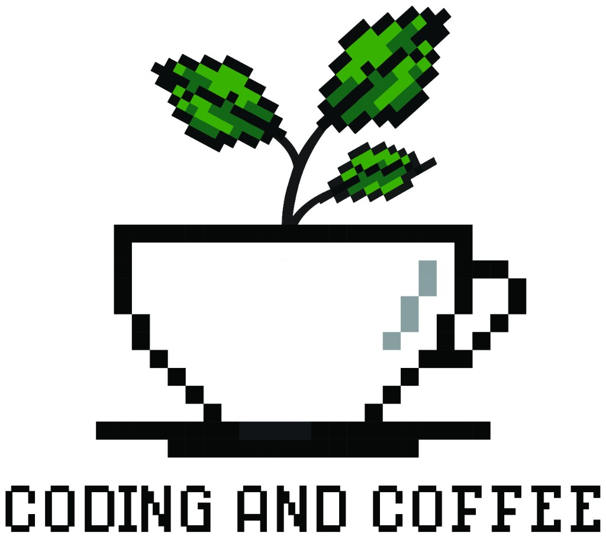
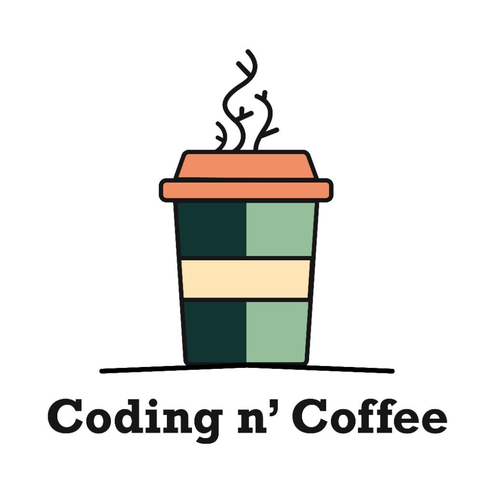
Then a student in Massachusetts reached out and said they had a vision for it. They definitely did.
The First Real Partnerships
Eventually I landed two partnerships that changed the shape of things.
The first was The Mill. They were interested — genuinely — but didn't have the space. Hosting a program four hours a week would eat into real estate they needed for their own operations. At the end of the day, business comes first, and I respected that.
What they offered instead was unlimited free coffee and permission to carry their brand. I could use their logo, reference the partnership, and show up to pitches with a well-known local name behind me. There was no money in it. But The Mill had weight in Lincoln, and I started putting that all over my materials.
The second was The Bay. They were in the middle of building out a collective space and specifically wanted to host programs in a new computer room — which also happened to double as a coffee shop and venue. It was exactly what Coffee & Coding needed on paper.
The overhead of actually running four hours of programming instruction a week, though, turned out to be its own project entirely.
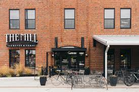
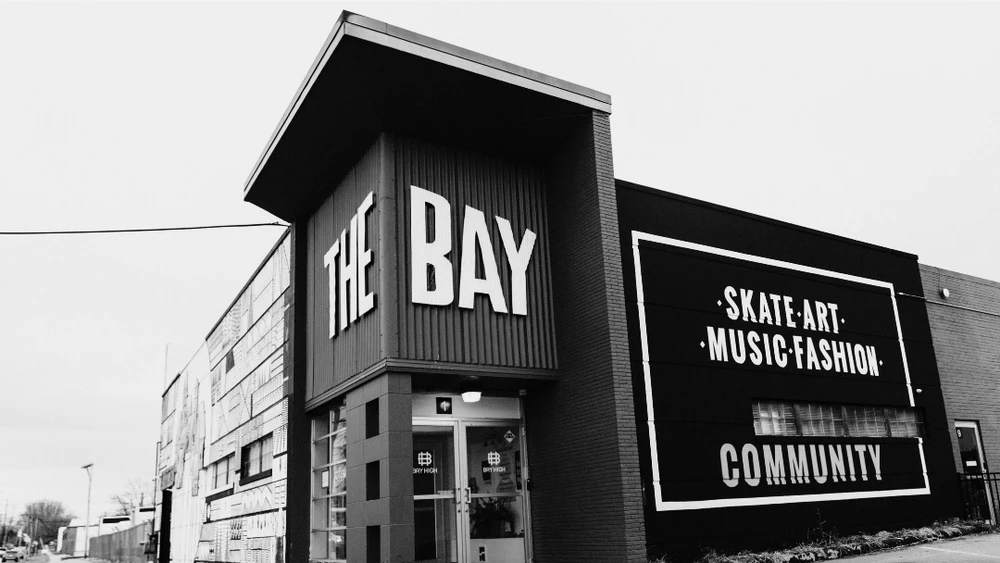
It Started Getting Real
Something shifted as I kept pushing. People were starting to know me by name — people I had never met. I started joining organizations, hosting official events, building presence.
And then something I hadn't expected: really smart people — students I had watched breeze past me in CS classes — were showing up and asking if they could be mentors. Not just smart, but genuinely personable. The kind of people you actually want in a room with a high schooler trying to figure out if this field is for them.
Here's the thing — these people didn't just look good on a resume. They came with real ideas. They helped me significantly brush out the curriculum into something that could actually hold up in a room full of skeptical high schoolers.
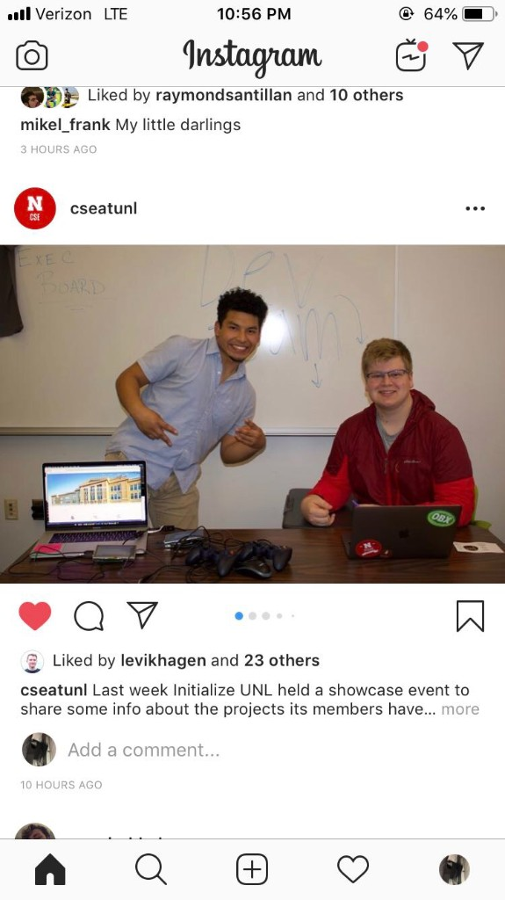
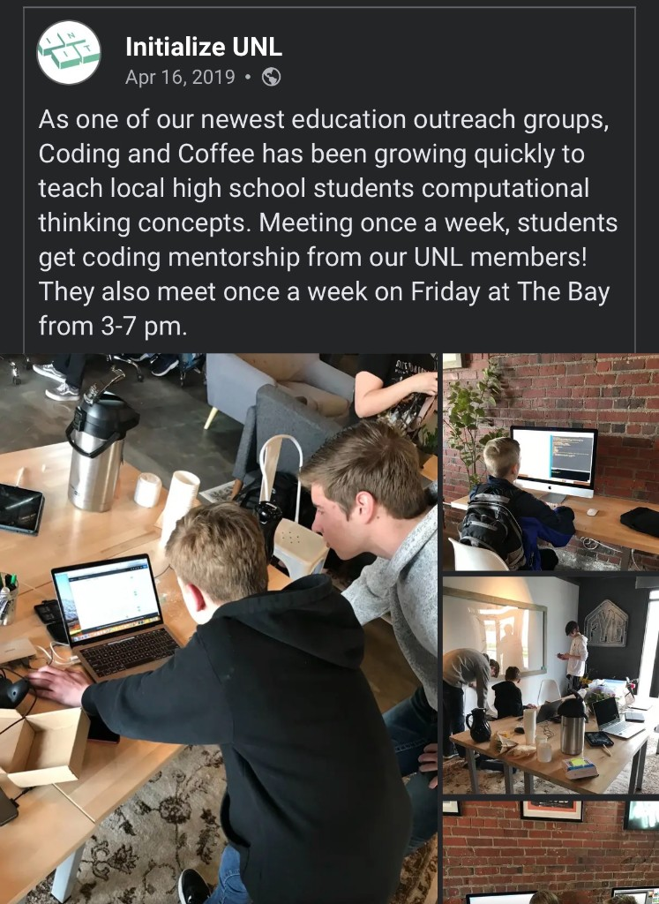
Phase 1.1: Iterations 1 and 2
Getting Mentors. Getting Money.
I started thinking about the mentor requirements more seriously. Honors students. Former FANG experience. Real credentials that would signal to schools and sponsors that this wasn't just a passion project anymore. I wrote up the requirements, started advertising, and began to attract exactly the kind of talent I had hoped for.
For the record: I did not meet my own requirements.
So I started showing up to every pitch event on campus — offered by anyone, for anything. It didn't take long before I'd raised just over a thousand dollars. That number might not sound like much. But my rent at the time was $300 a month and I was making $12 an hour as a developer. It felt significant. I ordered my first round of shirts.
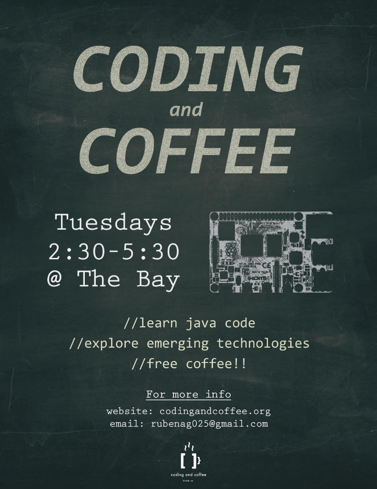
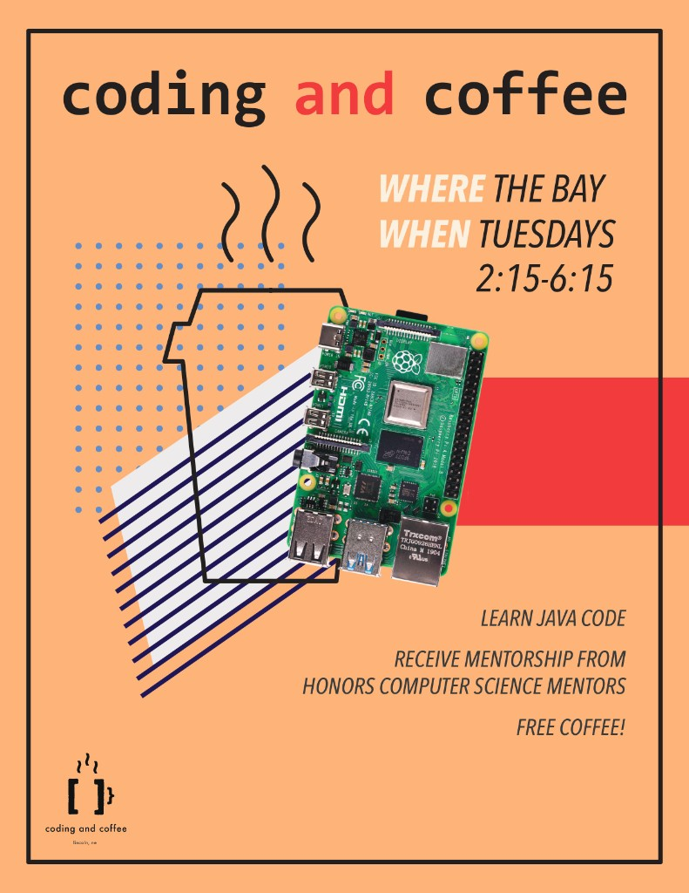
The Routine
By this point I had given in. The program was now Coding and Coffee. The other way did sound better. I was never going to win that fight.
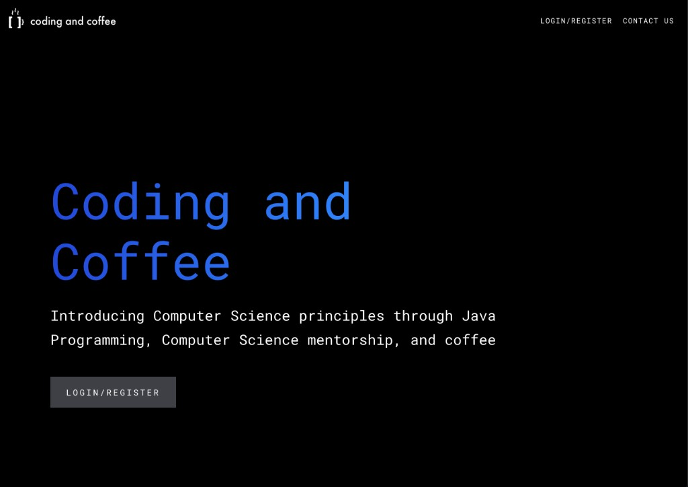
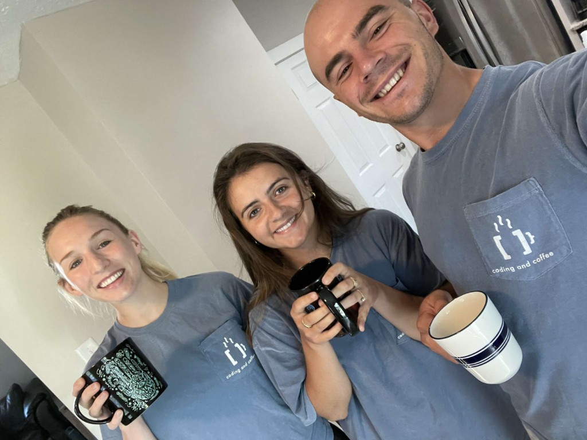
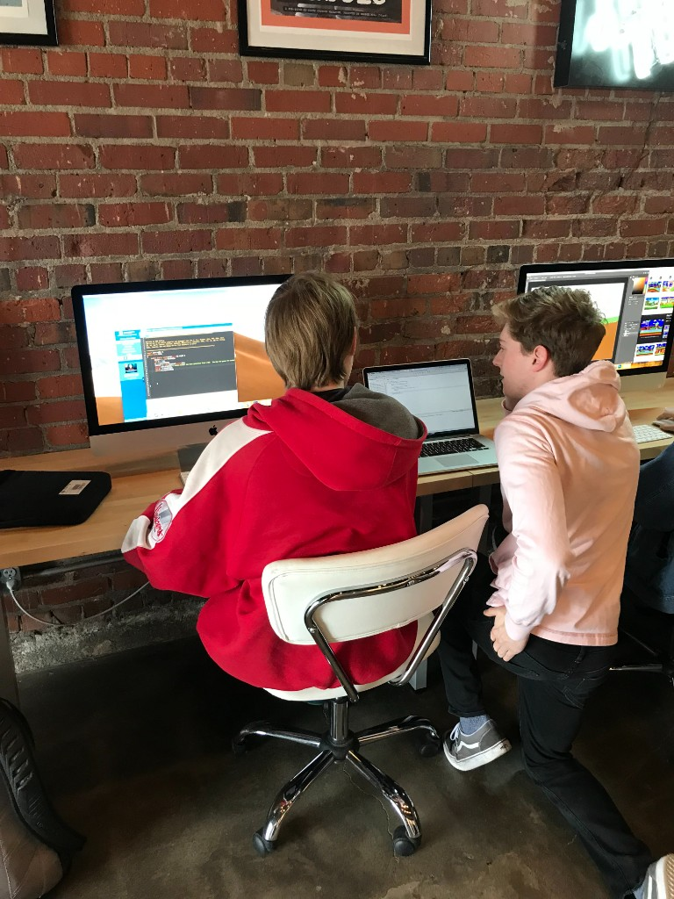
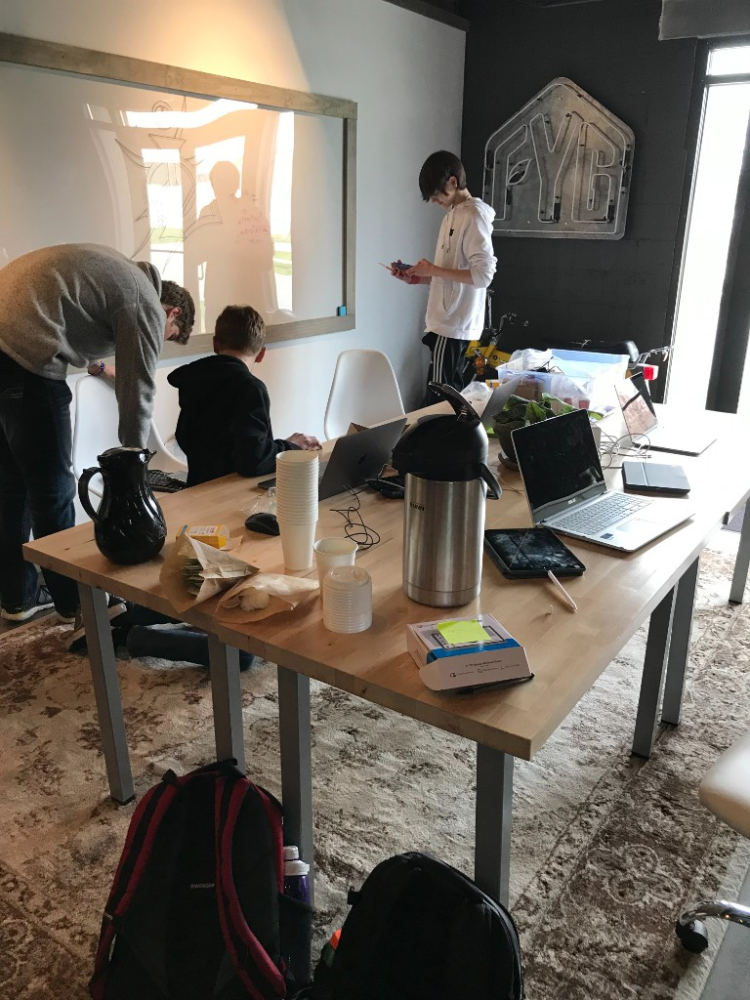
We had real backing from the community. A consistent schedule. Kids who were showing up not just for the curriculum but for each other — the in-person dynamic, the problems, the feeling of being part of something. The thing that Coding and Coffee was always supposed to be at its core was a community first, a class second. And that part was real.
I was deep in conversations about funneling our students into local internships before they ever reached college. The original problem — the gap I had lived through — felt like it was actually getting addressed.
Then COVID hit.
Within weeks we had to move everything remote. I knew immediately what that meant. The entire value proposition of the program lived in the room — the coffee, the mentors, the in-person energy. None of that translated to a Zoom link. Along with a lot of other things that spring, Coding and Coffee shut down.
More formative than any class or internship, Coding and Coffee taught me what real impact actually feels like, what it costs to build it — and that sometimes, the world has other plans.